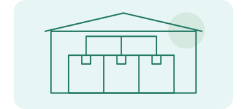

Run operations
Bring inventory, billing, purchases, customers, suppliers and people into connected daily workflows.
In developmentStromule is business management software in development for inventory, billing, purchases, customers and teams. It brings your everyday business operations together, helps you understand what needs attention and makes better business decisions easier to act on.
An intelligent operating foundation for everyday businesses.
In development · Registration is not open.Stock in one place. Sales and purchases in another. Customer dues in a notebook, supplier messages in a chat, attendance in a register. Too much still depends on the owner remembering it all.
Your business needs more than another place to store information. It needs a system that connects the way it works.
Stromule’s direction is business-wide operational intelligence: connect sales, purchases, stock, dues and team activity so owners can understand what is happening and what needs attention.
An operating foundation built around an actionable Copilot, human-centred workflows and authorized commerce connections. Recommendations and assisted execution remain product vision.
The Business Copilot vision connects questions, context-aware recommendations and action: understand your records, prepare the next step and execute approved operations within your permissions.
For example: examine stock alongside recent sales, review a replenishment suggestion and prepare a purchase draft. The intended experience keeps the question, supporting records and next step together.
The vision includes executing supported operations after approval and permission checks. Preparing a draft is separate from placing an order; consequential actions require appropriate authorization.
Concept · Not an available assistantWhat were my most profitable products this month?
These products may need replenishment based on recent sales and available stock.
Prepare a purchase draft for these products.
Inventory, billing and records support the daily work. Stromule’s direction connects that activity to business understanding and approved action. These groups describe development work and the vision beyond it.
Know what you have and where it is.
Product catalogue · Stock management and movements · Warehouses
In developmentVision: Replenishment insights
Follow the transaction from draft to return.
Billing · Quotations · Purchase orders · Sales records · Returns
In developmentKeep the relationship and its records together.
Customer and supplier management · Credit and outstanding records · Transaction history
In developmentGive the right work to the right people.
Employee management · Attendance and leave · Roles and permissions · Payment reminders
In developmentVision: Approval workflows
Turn connected activity into a clearer next step.
Sales and inventory summaries
In developmentVision: Inventory intelligence · Outstanding analysis · Business Pulse · Copilot recommendations
Serve a customer at the counter, check a delivery or review a purchase. Stromule’s direction is to fit those moments with touch-first interactions, familiar input and offline-capable essential work.
Choose an item, adjust a quantity and review a bill. Touch-oriented controls and adaptive panels are in development; a complete touch-first experience still needs device testing.
In developmentStylus input, handwriting and voice assistance are part of the vision for working in familiar ways. These input capabilities are not yet verified as implemented.
VisionOffline-capable essential operations are in development. The goal is continuity through a lost connection, followed by synchronization and reconciliation.
Explore the offline directionEssential business operations are being designed to continue even when connectivity is unavailable, with secure synchronization when a connection returns.
Offline billing, locally available business information and transaction recording are the intended experience.
Connection returns → Synchronize and reconcileLocal storage and synchronization code exist. End-to-end offline billing, conflict handling and reliable recovery still require release validation.
Marketplace discovery, external payment verification and cloud services need connectivity. Offline support is not a promise that every feature works without internet.
Stromule is designed to coexist with the tools businesses already depend on. Start with a useful workflow and adopt more when it makes sense.
Inventory CSV import is in development. Excel records can be prepared as CSV; direct workbook import and broader data migration are not confirmed.
Continue using systems such as Tally alongside Stromule. A live Tally connector or automatic reconciliation is not available.
Choose where Stromule fits first. Wider integrations and guided workflow adoption are part of the vision, not a requirement to replace established tools.
A shop, a workshop and a service business have different rhythms. Stromule’s ambition is to adapt workflows around that work without creating six separate products.
Stock, billing and repeat customers.

Purchase cycles, supply relationships and credit.
Materials, stock locations and daily coordination.
Customer work, bookings and team routines.
Quick transactions and essential records.
More people, locations and shared responsibility.
A shared foundation with business-specific experiences is the vision. These profiles do not imply that every specialist workflow is available.
Two products being designed to work independently and connect with merchant authorization. Stromule manages internal operations; Pangeabuy extends the business into external buyer discovery and commerce.
Manage business activities, maintain accurate records, understand performance and execute daily workflows.
In developmentDiscover products and services, find merchants and suppliers, connect buyers and sellers, and support commerce and order workflows.
Product direction · Availability unconfirmedUseful intelligence needs clear boundaries. Owners should know who can access information, what is shared and what an action will do.
Roles and permission-based access are in development, so responsibilities can follow the way your team works.
Business-controlled sharing and controlled integrations are design principles for connected services.
Auditability and transparent AI proposals are part of the vision, with review before consequential actions.
The intended onboarding journey starts with the essentials. Add people and workflows as your business is ready.
Registration is not open. Launch timing and pricing are unannounced. This site does not collect sign-ups; there is no public contact channel confirmed for this website yet.
What Stromule is becoming, what is still being built and what is not yet available.
Stromule is an Intelligent Business Operating System being developed by Kumpali Private Limited to help everyday businesses run operations, understand activity and act on what needs attention.
It overlaps with familiar business management software, including inventory and billing. Its direction is a connected operating experience spanning daily work, business understanding and approved action. It is not presented as a complete accounting or statutory compliance replacement.
The intended audience includes retailers, wholesalers, distributors, small manufacturers, service providers, street vendors and growing businesses. Business-specific workflows remain part of the development direction.
The intended approach is coexistence: keep your accounting system while adopting relevant Stromule workflows. No live Tally integration or automatic data exchange is confirmed.
Inventory CSV import exists in the development app. Preparing Excel records as compatible CSV is the intended starting point. Direct Excel workbook import, general migration and public availability are not confirmed.
Offline-first operation is in development. Local storage and sync implementations exist, but offline billing, conflict handling and recovery need release validation. Discovery, external payment verification and cloud features require connectivity.
A product vision for answering questions from business records, offering context-aware recommendations, preparing actions and executing supported operations after approval and permission checks. The conversation above is illustrative; a working Copilot is not currently offered on this website.
Stromule is the operational foundation. Pangeabuy is the Connected Commerce Network for discovery and commerce opportunities. They are intended to work independently, with authorized connections where implemented; the complete connected flow is not confirmed as live.
The intended policy is business-controlled sharing, not automatic publication of operational records. A future integration should explain what is shared and require appropriate authorization. This informational website does not connect to your business records.
Stromule is in development. Registration is not open on this site, and launch timing and pricing have not been announced. There is no waitlist or payment form.
Stromule has a global ambition. India is an important initial market, not the boundary of the product vision. Supported countries, currencies, languages and local requirements for launch remain to be confirmed.